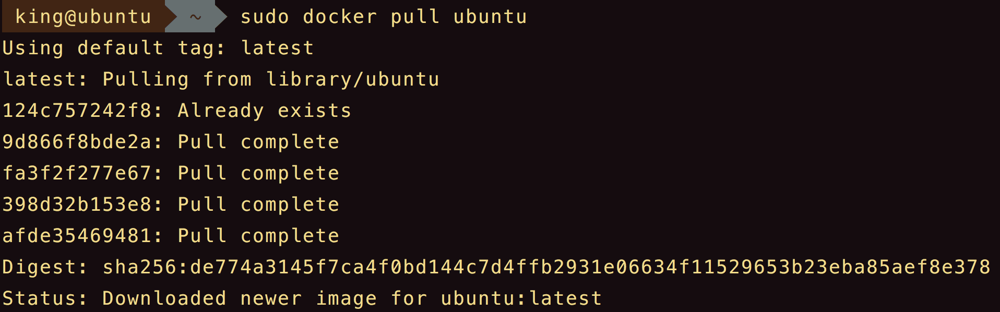
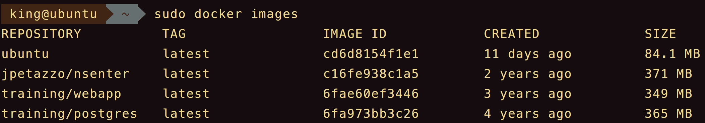
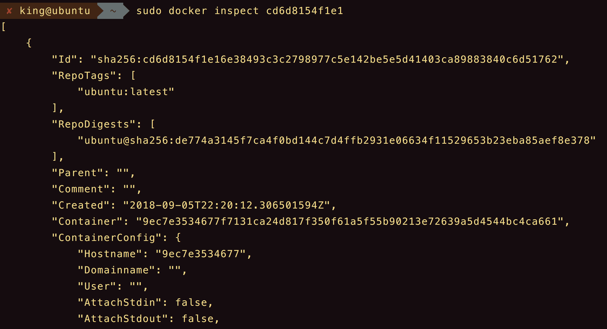
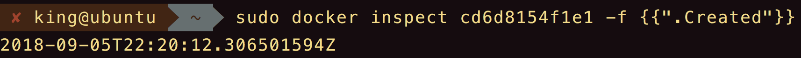
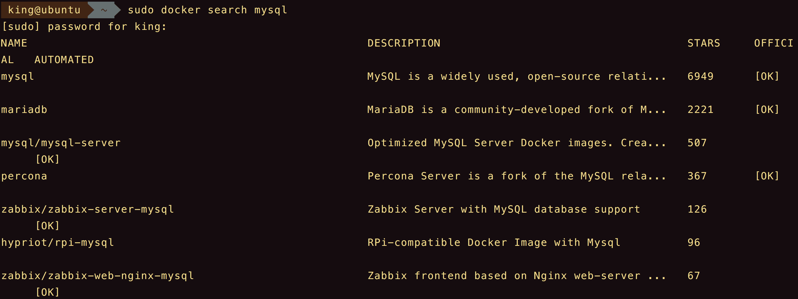
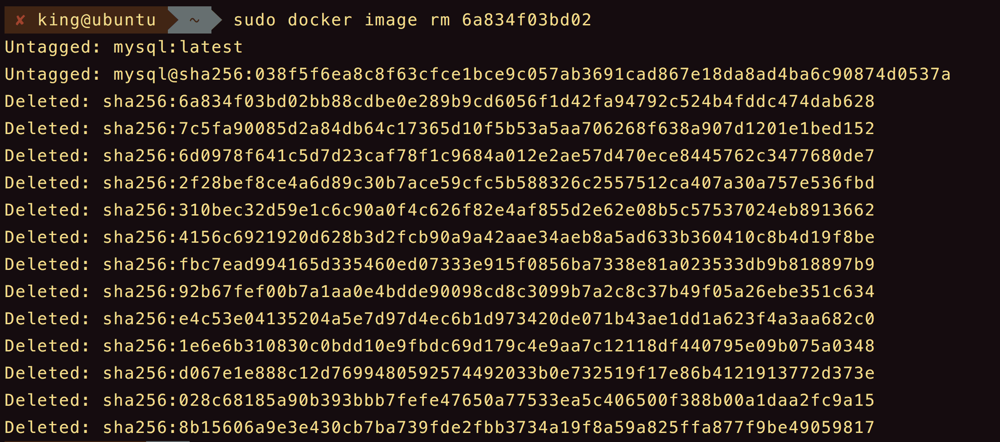
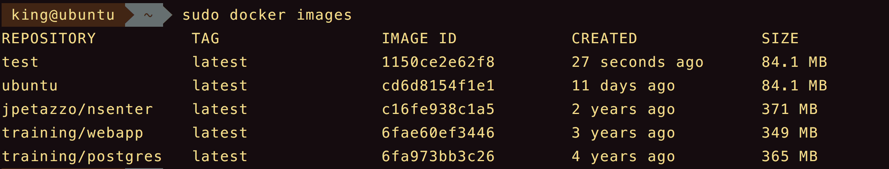
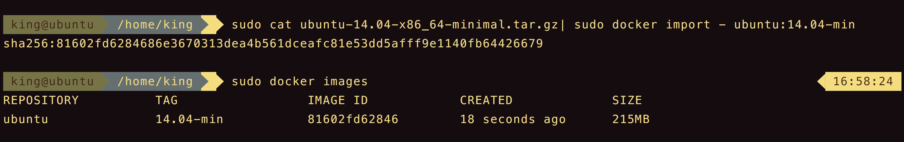
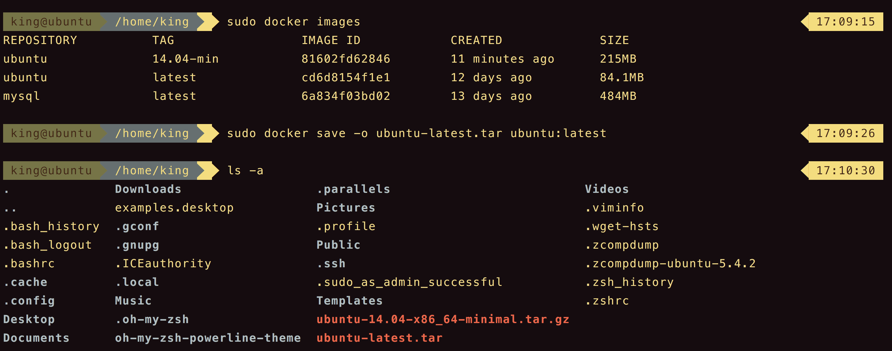
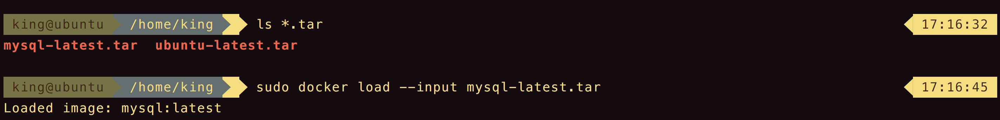

镜像是Docker的三大核心概念之一。
Docker运行容器前需要本地存在对应的镜像，如果不存在本地，Docker会尝试先从默认镜像仓库下载（Docker Hub），用户也可以通过配置，使用自定义的镜像仓库。
目录
获取镜像
命令的格式。
1 | docker pull NAME[:TAG] |
从Docker Hub的Ubuntu仓库下载最新的Ubuntu操作系统的镜像。
1 | sudo docker pull ubuntu |

下载过程中，镜像文件一般由若干层组成，行首的afde35469481字符串代表了各层的ID。
指定标签下载指定版本的镜像
1 | sudo docker pull ubuntu:16.04 |
查看镜像信息
使用docker images命令可以查看本地主机上已有的镜像。
1 | sudo docker images |

使用docker inspect获取镜像的详细信息
1 | sudo docker inspect [image id] |

docker inspect命令返回的是一个Json格式的消息，获取其中一项内容可以使用-f参数指定。获取镜像的Created信息。
1 | sudo docker inspect [image id] -f {{".Created"}} |

搜寻镜像
使用docker search命令可以搜寻远端仓库中共享的镜像。
1 | sudo docker search [item] |

删除镜像
1 | sudo docker images rm [image id|tag] |
或者
1 | sudo docker rmi [image id|tag] |

1 | sudo docker images rm [image id tag] -f |
创建镜像
创建镜像的方法有三种：基于已有镜像的容器创建、基于本地模板导入、基于Dockerfile创建。
基于已有镜像的容器创建
主要使用docker commit命令。
1 | sudo docker commit [options] container [repository[:tag]] |
演示。首先，启动一个镜像，并且在其中进行修改操作，创建test文件，之后退出。
1 | king@ubuntu ~ sudo docker run -it ubuntu /bin/bash |
提交镜像。
1 | king@ubuntu ~ sudo docker commit -m "Added a new file" -a "Docker Newbee" d12bc42d52bc test |
此时查看本地镜像列表，可以看到新创建的镜像。

基于本地模板导入
从一个操作系统模板文件导入一个镜像。这里使用的是OpenVZ提供的模板来创建。
下载地址
1 | sudo docker import [OPTIONS] file|URL|- [REPOSITORY[:TAG]] |

基于Dockerfile创建
下次讲
存储和载入镜像
存储镜像
1 | sudo docker save [OPTIONS] IMAGE [IMAGE...] |

载入镜像
1 | sudo docker load [OPTIONS] |

上传镜像
可以使用docker push命令上传镜像到仓库，默认上传到DockerHub官方仓库（需要登录）。
1 | sudo docker push [OPTIONS] NAME[:TAG] |